Sql2
SQL Data Types#
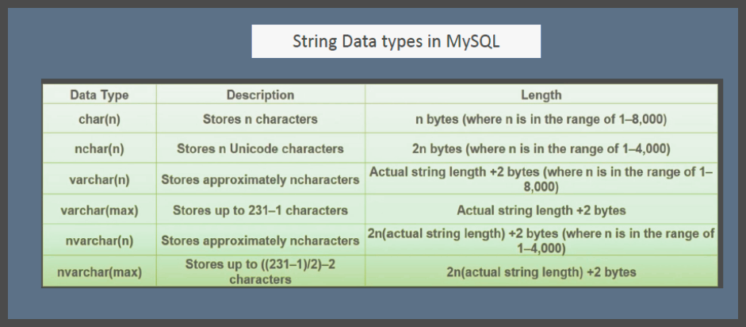
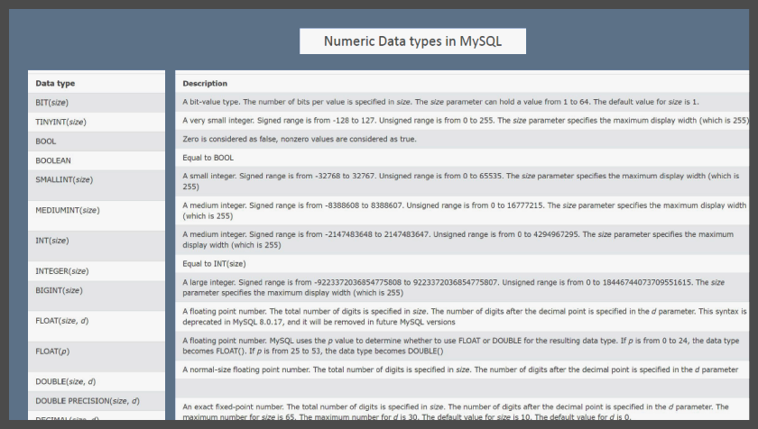
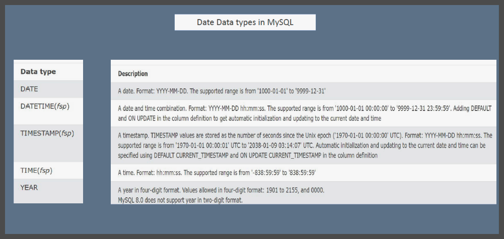
Types of commands in SQL#
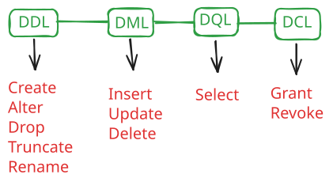
- Data Definition language
- Data Manipulation language
- Data Query language
- Data Control language
SQL Constraints#
SQL constraints are used to specify rules for the data in a table. Constraints are used to limit the type of data that can go into a table. This ensures the accuracy and reliability of the data in the table. If there is any violation between the constraint and the data action, the action is aborted. Constraints can be column level or table level.
The following constraints are commonly used in SQL:
- NOT NULL - Ensures that a column cannot have a NULL value
- UNIQUE - Ensures that all values in a column are different
- PRIMARY KEY - A combination of a NOT NULL and UNIQUE. Uniquely identifies each row in a table
- FOREIGN KEY - Prevents actions that would destroy links between tables
- CHECK - Ensures that the values in a column satisfies a specific condition
- DEFAULT - Sets a default value for a column if no value is specified
Primary Key
- Uniqueness: Each primary key value must be unique per table row.
- Immutable: Primary keys should not change once set.
- Simplicity: Ideal to keep primary keys as simple as possible.
- Non-Intelligent: They shouldn't contain meaningful information.
- Indexed: Primary keys are automatically indexed for faster data retrieval.
- Referential Integrity: They serve as the basis for foreign keys in other tables.
- Data Type: Common types are integer or string.
Foreign Key
- Referential Integrity: Foreign keys link records between tables, maintaining data consistency.
- Nullable: Foreign keys can contain null values unless specifically restricted.
- Match Primary Keys: Each foreign key value must match a primary key value in the parent table, or be null.
- Ensure Relationships: They define the relationship between tables in a database.
- No Uniqueness: Foreign keys don't need to be unique.
Functions#
Functions in MySQL are reusable blocks of code that perform a specific task and return a single value.
Purpose: Simplify complex calculations, enhance code reusability, and improve query performance.
Types: Built-in Functions and User-Defined Functions (UDFs).
-
Built-in Functions
a. String Functions (e.g., CONCAT, LENGTH, SUBSTRING)
b. Numeric Functions (e.g., ABS, ROUND, CEIL)
c. Date and Time Functions (e.g., NOW, DATE_FORMAT, DATEDIFF)
d. Aggregate Functions (e.g., COUNT, SUM, AVG)
-
User-Defined Functions (UDFs)
Custom functions created by users to perform specific operations. It is customizable, reusable, and encapsulate complex logic.
DELIMITER $$
CREATE FUNCTION function_name(parameter(s))
RETURNS data_type
DETERMINISTIC
BEGIN
-- function body
RETURN value;
END $$
DELIMITER ;
JOINS#
SQL joins are used to combine rows from two or more tables, based on a related column between them.
Here are the main types of SQL joins:
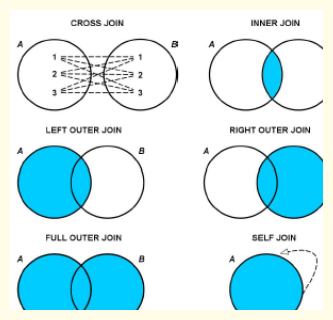
Inner Join
Returns records that have matching values in both tables.
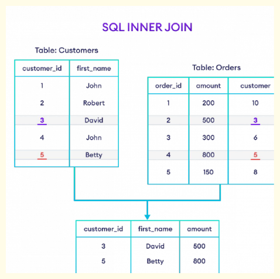
SELECT Customers.customer_id,
Customers.first_name,
Orders.amount
FROM Customers
INNER JOIN Orders
ON Orders.customer = Customers.customer_id;
Left Join
Returns all records from the left table (table1), and the matched records from the right table(table2). If no match, the result is NULL on the right side.
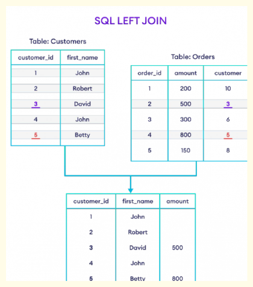
SELECT Customers.customer_id,
Customers.first_name,
Orders.amount
FROM Customers
LEFT JOIN Orders
ON Orders.customer = Customers.customer_id;
Right Join
Returns all records from the right table (table2), and the matched records from the left table(table1). If no match, the result is NULL on the left side.
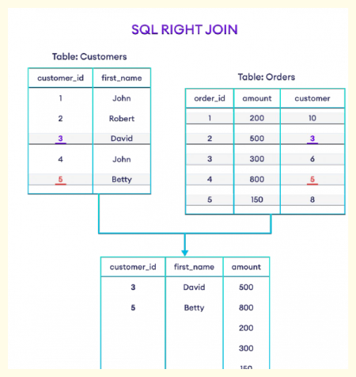
SELECT Customers.customer_id,
Customers.first_name,
Orders.amount
FROM Customers
RIGHT JOIN Orders
ON Orders.customer = Customers.customer_id;
Full Join
Returns all records when there is a match in either left (table1) or right (table2) table records.
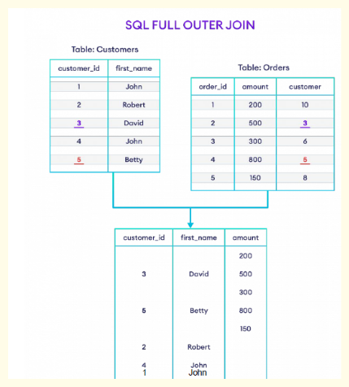
SELECT Customers.customer_id,
Customers.first_name,
Orders.amount
FROM Customers
FULL OUTER JOIN Orders
ON Orders.customer = Customers.customer_id;
Cross Join
Returns the Cartesian product of the sets of records from the two or more joined tables when no WHERE clause is used with CROSS JOIN.
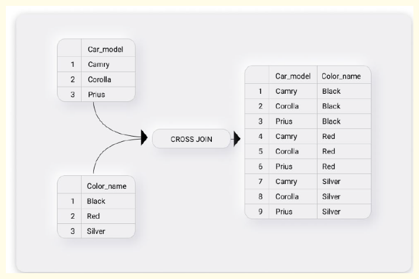
SELECT Model.car_model,
Color.color_name
FROM Model
Cross JOIN Color;
Self Join
A regular join, but the table is joined with itself.
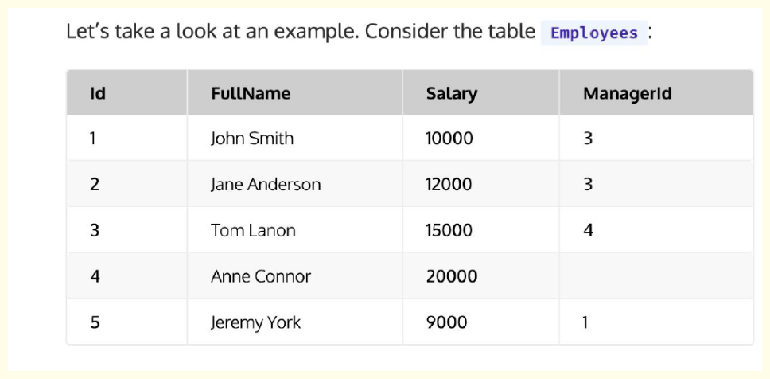
Now, to show the name of the manager for each employee in the same row, we can run the following query:
SELECT
employee.Id,
employee.FullName,
employee.ManagerId,
manager.FullName as ManagerName
FROM Employees employee
JOIN Employees manager
ON employee.ManagerId = manager.Id;
Group By WITH ROLLUP
The GROUP BY clause in MySQL is used to group rows that have the same values in specified columns into aggregated data. The WITH ROLLUP option allows you to include extra rows that represent subtotals and grand totals.
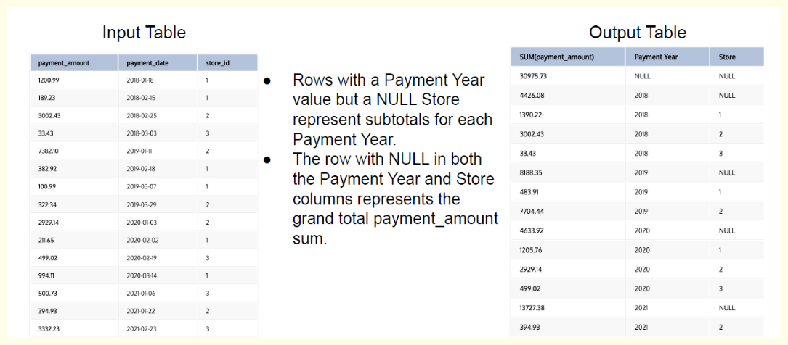
SELECT
SUM(payment_amount),
YEAR(payment_date) AS 'Payment Year',
store_id AS 'Store'
FROM payment
GROUP BY YEAR(payment_date), store_id WITH ROLLUP
ORDER BY YEAR(payment_date), store_id;
Views#
A view in SQL is a virtual table based on the result-set of an SQL statement. It contains rows and columns, just like a real table. The fields in a view are fields from one or more real tables in the database.
Here are some key points about views:
- You can add SQL functions, WHERE, and JOIN statements to a view and display the data as if the data were coming from one single table.
- A view always shows up-to-date data. The database engine recreates the data every time a user queries a view.
- Views can be used to encapsulate complex queries, presenting users with a simpler interface to the data.
- They can be used to restrict access to sensitive data in the underlying tables, presenting only non-sensitive data to users.
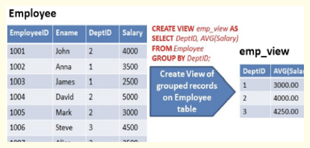
CREATE VIEW View_Products AS SELECT ProductName, Price FROM Products
WHERE Price > 30;
Window Functions#
- Window functions: These are special SQL functions that perform a calculation across a set of related rows.
- How it works: Instead of operating on individual rows, a window function operates on a group or 'window' of rows that are somehow related to the current row. This allows for complex calculations based on these related rows.
- Window definition: The 'window' in window functions refers to a set of rows. The window can be defined using different criteria depending on the requirements of your operation.
- Partitions: By using the PARTITION BY clause, you can divide your data into smaller sets or 'partitions'. The window function will then be applied individually to each partition.
- Order of rows: You can specify the order of rows in each partition using the ORDER BY clause. This order influences how some window functions calculate their result.
- Frames: The ROWS/RANGE clause lets you further narrow down the window by defining a 'frame' or subset of rows within each partition.
- Comparison with Aggregate Functions: Unlike aggregate functions that return a single result per group, window functions return a single result for each row of the table based on the group of rows defined in the window.
- Advantage: Window functions allow for more complex operations that need to take into account not just the current row, but also its 'neighbours' in some way.
syntax#
function_name (column) OVER (
[PARTITION BY column_name_1, ..., column_name_n]
[ORDER BY column_name_1 [ASC | DESC], ..., column_name_n [ASC | DESC]]
)
- function_name: This is the window function you want to use. Examples include ROW_NUMBER(), RANK(), DENSE_RANK(), SUM(), AVG(), and many others.
- (column): This is the column that the window function will operate on. For some functions like SUM(salary)
- OVER (): This is where you define the window. The parentheses after OVER contain the specifications for the window.
- PARTITION BY column_name_1, ..., column_name_n: This clause divides the result set into partitions upon which the window function will operate independently. For example, if you have PARTITION BY salesperson_id, the window function will calculate a result for each salesperson independently.
- ORDER BY column_name_1 [ASC | DESC], ..., column_name_n [ASC | DESC]: This clause specifies the order of the rows in each partition. The window function operates on these rows in the order specified. For example, ORDERBY sales_date DESC will make the window function operate on rows with more recent dates first.
Types of Windows Function#
There are three main categories of window functions in SQL: Ranking functions, Value functions, and Aggregate functions. Here's a brief description and example for each:
Ranking Functions:#
- ROW_NUMBER(): Assigns a unique row number to each row, ranking start from 1 and keep increasing till the end of last row
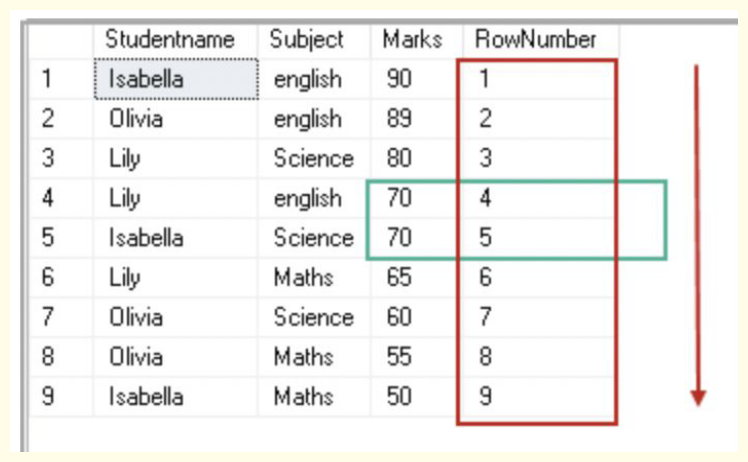
SELECT Studentname,
Subject,
Marks,
ROW_NUMBER() OVER(ORDER BY Marks desc)
RowNumber
FROM ExamResult;
- RANK(): Assigns a rank to each row. Rows with equal values receive the same rank, with the next row receiving a rank which skips the duplicate rankings.
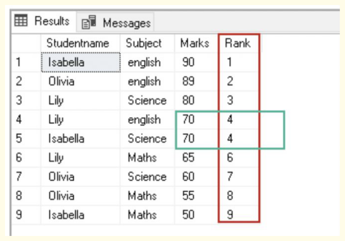
SELECT Studentname,
Subject,
Marks,
RANK() OVER(ORDER BY Marks DESC) Rank
FROM ExamResult
ORDER BY Rank;
- DENSE_RANK(): Similar to RANK(), but does not skip rankings if there are duplicates.
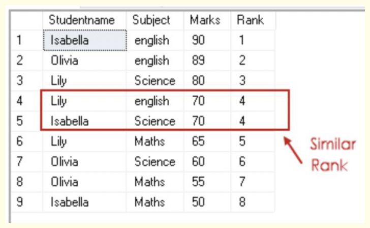
SELECT Studentname,
Subject,
Marks,
DENSE_RANK() OVER(ORDER BY Marks DESC) Rank
FROM ExamResult
Value Functions:#
These functions perform calculations on the values of the window rows.
- FIRST_VALUE(): Returns the first value in the window.

SELECT
employee_name,
department,
hours,
FIRST_VALUE(employee_name) OVER (
PARTITION BY department
ORDER BY hours
) least_over_time
FROM
overtime;
- LAST_VALUE(): Returns the last value in the window.
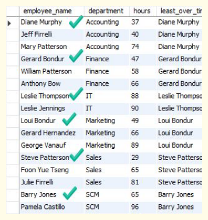
SELECT employee_name, department,salary,
LAST_VALUE(employee_name)
OVER (
PARTITION BY department ORDER BY
salary
) as max_salary
FROM Employee;
- LAG(): Returns the value of the previous row.
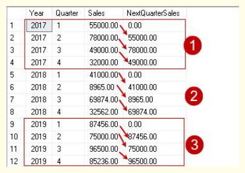
SELECT
Year,
Quarter,
Sales,
LAG(Sales, 1, 0) OVER(
PARTITION BY Year
ORDER BY Year,Quarter ASC)
AS NextQuarterSales
FROM ProductSales;
- LEAD(): Returns the value of the next row.
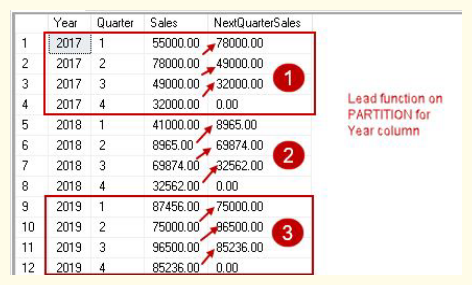
SELECT Year,
Quarter,
Sales,
LEAD(Sales, 1, 0) OVER(
PARTITION BY Year
ORDER BY Year,Quarter ASC)
AS NextQuarterSales
FROM ProductSales;
Aggregation Functions:#
These functions perform calculations on the values of the window rows.
- SUM()
- MIN()
- MAX()
- AVG()
Frame Clause#
The frame clause in window functions defines the subset of rows ('frame') used for calculating the result of the function for the current row.
It's specified within the OVER() clause after PARTITION BY and ORDER BY.
The frame is defined by two parts: a start and an end, each relative to the current row.
Generic syntax for a window function with a frame clause: function_name (expression) OVER ( [PARTITION BY column_name_1, ..., column_name_n] [ORDER BY column_name_1 [ASC | DESC], ..., column_name_n [ASC | DESC]] [ROWS|RANGE frame_start TO frame_end] )
The frame start can be: 1. UNBOUNDED PRECEDING (starts at the first row of the partition) 2. N PRECEDING (starts N rows before the current row) 3. CURRENT ROW (starts at the current row)
The frame end can be: 1. UNBOUNDED FOLLOWING (ends at the last row of the partition) 2. N FOLLOWING (ends N rows after the current row) 3. CURRENT ROW (ends at the current row)
For ROWS, the frame consists of N rows coming before or after the current row.
For RANGE, the frame consists of rows within a certain value range relative to the value in the current row.
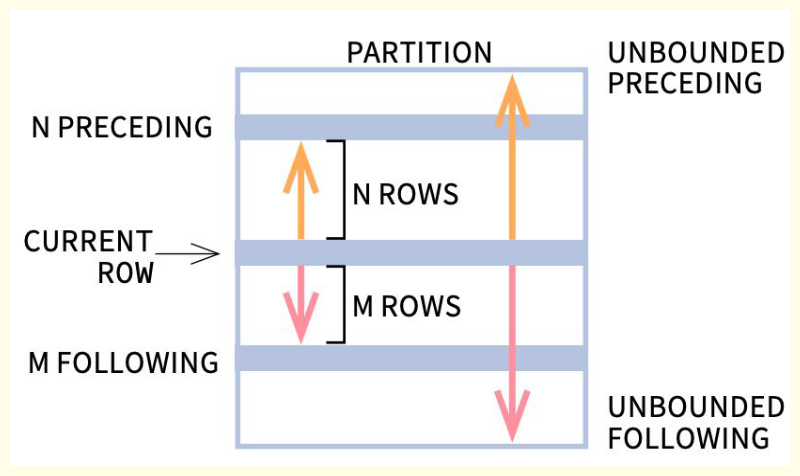
ROWS BETWEEN Example:
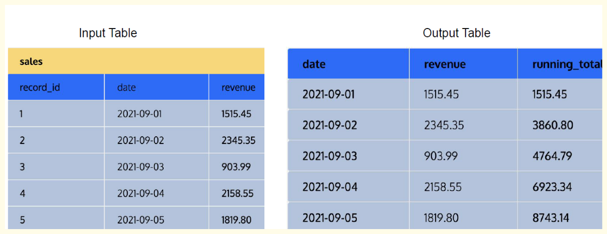
SELECT date, revenue,
SUM(revenue) OVER (
ORDER BY date
ROWS BETWEEN UNBOUNDED PRECEDING AND CURRENT ROW) running_total
FROM sales
ORDER BY date;
RANGE BETWEEN Example:
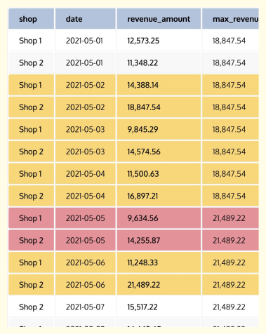
SELECT
shop,
date,
revenue_amount,
MAX(revenue_amount) OVER (
ORDER BY DATE
RANGE BETWEEN INTERVAL '3' DAY PRECEDING
AND INTERVAL '1' DAY FOLLOWING
) AS max_revenue
FROM revenue_per_shop;
Common Table Expression#
A Common Table Expression (CTE) in SQL is a named temporary result set that exists only within the execution scope of a single SQL statement. Here are some important points to note about CTEs:
CTEs can be thought of as alternatives to derived tables, inline views, or subqueries.
They can be used in SELECT, INSERT, UPDATE, or DELETE statements.
CTEs help to simplify complex queries, particularly those involving multiple subqueries or recursive queries.
They make your query more readable and easier to maintain.
A CTE is defined using the WITH keyword, followed by the CTE name and a query. The CTE can then be referred to by its name elsewhere in the query.
Here's a basic example of a CTE: WITH sales_cte AS ( SELECT sales_person, SUM(sales_amount) as total_sales FROM sales_table GROUP BY sales_person ) SELECT sales_person, total_sales FROM sales_cte WHERE total_sales > 1000;
Recursive CTE:
This is a CTE that references itself. In other words, the CTE query definition refers back to the CTE name, creating a loop that ends when a certain condition is met. Recursive CTEs are useful for working with hierarchical or tree-structured data.
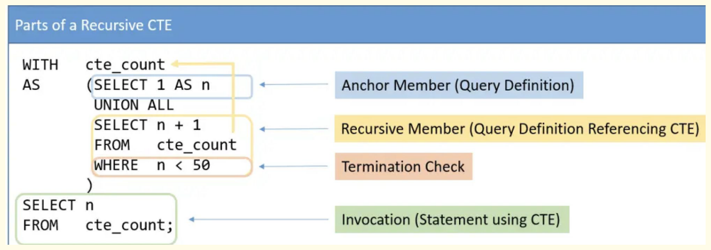
Example:
WITH RECURSIVE number_sequence AS (
SELECT 1 AS number
UNION ALL
SELECT number + 1
FROM number_sequence
WHERE number < 10
)
SELECT * FROM number_sequence;
Indexing#
Indexing in databases involves creating a data structure that improves the speed of data retrieval operations on a database table.
Indexes are used to quickly locate data without having to search every row in a table each time a database table is accessed.
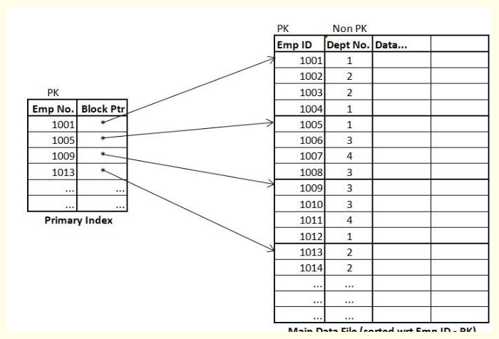
Why is Indexing Important?#
Indexes are crucial for enhancing the performance of a database by:
- Speeding up Query Execution: Indexes reduce the amount of data that needs to be scanned for a query, significantly speeding up data retrieval operations.
- Optimizing Search Operations: Indexes help in efficiently searching for records based on the indexed columns.
- Improving Sorting and Filtering: Indexes assist in sorting and filtering operations by providing a structured way to access data.
- Enhancing Join Performance: Indexes on join columns improve the performance of join operations between tables.
Advantages of Indexing#
- Faster Data Retrieval: Indexes make search queries faster by providing a quick way to locate rows in a table.
- Efficient Use of Resources: Reduced query execution time translates to more efficient use of CPU and memory resources.
- Improved Performance for Large Tables: Indexes are particularly beneficial for large tables where full table scans would be time-consuming.
- Better Sorting and Filtering: Indexes can improve the performance of ORDER BY, GROUP BY, and WHERE clauses.
How to Choose the Right Indexing Column#
- Primary Key and Unique Constraints: Always index columns that are primary keys or have unique constraints, as they uniquely identify rows.
- Frequently Used Columns in WHERE Clauses: Index columns that are frequently used in WHERE clauses to filter data.
- Columns Used in Joins: Index columns that are used in join conditions to speed up join operations.
- Columns Used in ORDER BY and GROUP BY: Index columns that are used in ORDER BY and GROUP BY clauses for faster sorting and grouping.
- Selectivity of the Column: Choose columns with high selectivity (columns with many unique values) to maximize the performance benefits of the index.
Query Optimizations#
- Use Column Names Instead of * in a SELECT Statement
Avoid including a HAVING clause in SELECT statements
The HAVING clause is used to filter the rows after all the rows are selected and it is used like a filter. It is quite useless in a SELECT statement. It works by going through the final result table of the query parsing out the rows that don’t meet the HAVING condition.
Example:
Original query:
SELECT s.cust_id,count(s.cust_id)
FROM SH.sales s
GROUP BY s.cust_id
HAVING s.cust_id != '1660' AND s.cust_id != '2';
Improved query:
SELECT s.cust_id,count(cust_id)
FROM SH.sales s
WHERE s.cust_id != '1660'
AND s.cust_id !='2'
GROUP BY s.cust_id;
- Eliminate Unnecessary DISTINCT Conditions
Considering the case of the following example, the DISTINCT keyword in the original query is unnecessary because the table_name contains the primary key p.ID, which is part of the result set.
Example:
Original query:
SELECT DISTINCT * FROM SH.sales s
JOIN SH.customers c
ON s.cust_id= c.cust_id
WHERE c.cust_marital_status = 'single';
Improved query:
SELECT * FROM SH.sales s JOIN
SH.customers c
ON s.cust_id = c.cust_id
WHERE c.cust_marital_status='single';
- Consider using an IN predicate when querying an indexed column
The IN-list predicate can be exploited for indexed retrieval and also, the optimizer can sort the IN-list to match the sort sequence of the index, leading to more efficient retrieval. Example:
Original query:
SELECT s.*
FROM SH.sales s
WHERE s.prod_id = 14
OR s.prod_id = 17;
Improved query:
SELECT s.*
FROM SH.sales s
WHERE s.prod_id IN (14, 17);
- Try to use UNION ALL in place of UNION
The UNION ALL statement is faster than UNION, because UNION ALL statement does not consider duplicate s, and UNION statement does look for duplicates in a table while selection of rows, whether or not they exist. Example:
Original query:
SELECT cust_id
FROM SH.sales
UNION
SELECT cust_id
FROM customers;
Improved query:
SELECT cust_id
FROM SH.sales
UNION ALL
SELECT cust_id
FROM customers;